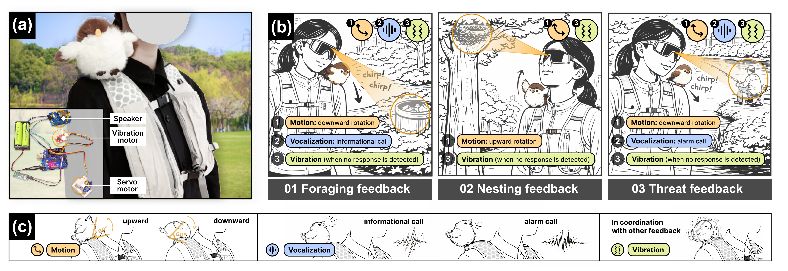

Seeing with a Bird's Perception: Designing a Wearable Experience to Reorient Attention to Everyday Nature
CHI EA '26 · Proceedings of the CHI Conference on Human Factors in Computing Systems
† Corresponding author
Abstract
Despite cohabiting with diverse non-human species, urban residents increasingly experience disconnection from everyday nature. Prior more-than-human design work has explored perspective-taking to prompt reflection on human-nature relationships, yet often remains situated in virtual or isolated contexts. To address this gap, we present a nature walk experience based on Perch, a sparrow-inspired zoomorphic wearable robot. Perch translates birds' attentional patterns into subtle multimodal cues, aiming to reorient users' attention toward cohabiting nature through shared and non-intrusive perceptual proxy. A mixed-methods study with 18 participants shows that the proposed experience enhances nature relatedness and promotes reflection, initiative, and experiential engagement with everyday nature. Our work contributes an embodied, calm interaction approach to more-than-human design and offers design implications for integrating peripheral attention reorientation into everyday urban environments.